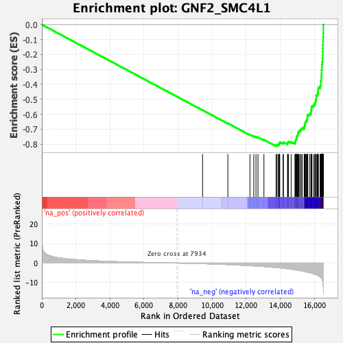
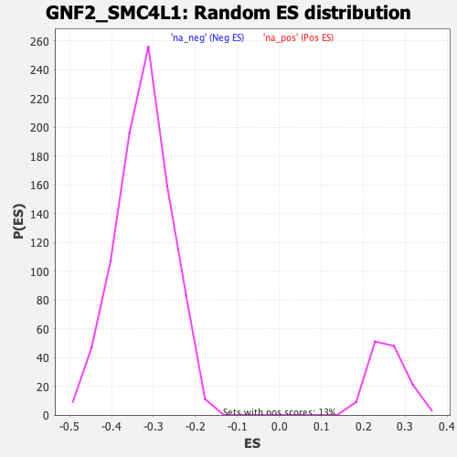

| | | Dataset | DE_genes2 |
| Phenotype | NoPhenotypeAvailable |
| Upregulated in class | na_neg |
| GeneSet | GNF2_SMC4L1 |
| Enrichment Score (ES) | -0.8143944 |
| Normalized Enrichment Score (NES) | -2.515347 |
| Nominal p-value | 0.0 |
| FDR q-value | 0.0 |
| FWER p-Value | 0.0 |
Table: GSEA Results Summary

Fig 1: Enrichment plot: GNF2_SMC4L1
Profile of the Running ES Score & Positions of GeneSet Members on the Rank Ordered List
| PROBE | GENE SYMBOL | GENE_TITLE | RANK IN GENE LIST | RANK METRIC SCORE | RUNNING ES | CORE ENRICHMENT | | 1 | PCCB | | | 9436 | -0.300 | -0.5729 | No |
| 2 | HNRNPAB | | | 10920 | -0.773 | -0.6612 | No |
| 3 | COPS3 | | | 12216 | -1.334 | -0.7367 | No |
| 4 | DTYMK | | | 12442 | -1.447 | -0.7469 | No |
| 5 | SNRPG | | | 12571 | -1.519 | -0.7510 | No |
| 6 | E2F8 | | | 12689 | -1.584 | -0.7544 | No |
| 7 | RRM1 | | | 13038 | -1.791 | -0.7712 | No |
| 8 | GAR1 | | | 13749 | -2.282 | -0.8089 | Yes |
| 9 | MCM3 | | | 13783 | -2.315 | -0.8054 | Yes |
| 10 | MCM5 | | | 13861 | -2.378 | -0.8044 | Yes |
| 11 | FEN1 | | | 13911 | -2.426 | -0.8016 | Yes |
| 12 | SSRP1 | | | 13940 | -2.448 | -0.7974 | Yes |
| 13 | MCM7 | | | 13952 | -2.457 | -0.7922 | Yes |
| 14 | DHFR | | | 13968 | -2.471 | -0.7872 | Yes |
| 15 | TYMS | | | 14161 | -2.652 | -0.7925 | Yes |
| 16 | NUP153 | | | 14183 | -2.680 | -0.7874 | Yes |
| 17 | MRPL35 | | | 14425 | -2.908 | -0.7951 | Yes |
| 18 | DUT | | | 14433 | -2.919 | -0.7885 | Yes |
| 19 | SNRPD1 | | | 14482 | -2.970 | -0.7843 | Yes |
| 20 | EIF2S1 | | | 14635 | -3.169 | -0.7860 | Yes |
| 21 | DNAJC9 | | | 14857 | -3.434 | -0.7912 | Yes |
| 22 | SLBP | | | 14893 | -3.498 | -0.7849 | Yes |
| 23 | PCNA | | | 14896 | -3.501 | -0.7767 | Yes |
| 24 | MCM4 | | | 14906 | -3.510 | -0.7688 | Yes |
| 25 | SUPT16H | | | 14949 | -3.572 | -0.7628 | Yes |
| 26 | RACGAP1 | | | 14957 | -3.580 | -0.7547 | Yes |
| 27 | MSH2 | | | 14972 | -3.606 | -0.7469 | Yes |
| 28 | MCM2 | | | 15006 | -3.658 | -0.7402 | Yes |
| 29 | PLK4 | | | 15029 | -3.687 | -0.7327 | Yes |
| 30 | GMNN | | | 15032 | -3.688 | -0.7240 | Yes |
| 31 | CKS2 | | | 15086 | -3.767 | -0.7182 | Yes |
| 32 | ZWINT | | | 15107 | -3.798 | -0.7103 | Yes |
| 33 | SRSF1 | | | 15186 | -3.901 | -0.7057 | Yes |
| 34 | CDCA8 | | | 15225 | -3.955 | -0.6986 | Yes |
| 35 | ANP32B | | | 15295 | -4.108 | -0.6929 | Yes |
| 36 | CDC20 | | | 15404 | -4.309 | -0.6892 | Yes |
| 37 | POLE2 | | | 15406 | -4.310 | -0.6789 | Yes |
| 38 | EXOSC8 | | | 15447 | -4.383 | -0.6709 | Yes |
| 39 | DKC1 | | | 15450 | -4.389 | -0.6605 | Yes |
| 40 | VRK1 | | | 15477 | -4.445 | -0.6514 | Yes |
| 41 | CBX3 | | | 15520 | -4.527 | -0.6431 | Yes |
| 42 | GINS1 | | | 15564 | -4.619 | -0.6347 | Yes |
| 43 | ZWILCH | | | 15582 | -4.659 | -0.6246 | Yes |
| 44 | FANCI | | | 15588 | -4.678 | -0.6137 | Yes |
| 45 | AURKA | | | 15607 | -4.737 | -0.6035 | Yes |
| 46 | FOXM1 | | | 15710 | -4.931 | -0.5979 | Yes |
| 47 | NASP | | | 15792 | -5.106 | -0.5906 | Yes |
| 48 | RFC4 | | | 15807 | -5.149 | -0.5791 | Yes |
| 49 | CDK1 | | | 15810 | -5.156 | -0.5669 | Yes |
| 50 | CCNB2 | | | 15832 | -5.225 | -0.5556 | Yes |
| 51 | PRIM1 | | | 15856 | -5.276 | -0.5444 | Yes |
| 52 | METAP2 | | | 15957 | -5.539 | -0.5372 | Yes |
| 53 | RFC3 | | | 16020 | -5.728 | -0.5273 | Yes |
| 54 | TMPO | | | 16067 | -5.864 | -0.5161 | Yes |
| 55 | KIF18B | | | 16087 | -5.923 | -0.5030 | Yes |
| 56 | HAT1 | | | 16101 | -5.959 | -0.4896 | Yes |
| 57 | PRC1 | | | 16103 | -5.960 | -0.4754 | Yes |
| 58 | FBXO5 | | | 16169 | -6.210 | -0.4645 | Yes |
| 59 | GINS2 | | | 16213 | -6.392 | -0.4518 | Yes |
| 60 | RAD51AP1 | | | 16221 | -6.439 | -0.4368 | Yes |
| 61 | DTL | | | 16230 | -6.481 | -0.4218 | Yes |
| 62 | BUB1B | | | 16335 | -7.102 | -0.4111 | Yes |
| 63 | NUSAP1 | | | 16374 | -7.420 | -0.3956 | Yes |
| 64 | CCNA2 | | | 16376 | -7.439 | -0.3779 | Yes |
| 65 | ANP32E | | | 16405 | -7.799 | -0.3609 | Yes |
| 66 | KIF11 | | | 16409 | -7.860 | -0.3423 | Yes |
| 67 | SMC4 | | | 16421 | -7.981 | -0.3239 | Yes |
| 68 | USP1 | | | 16424 | -8.003 | -0.3048 | Yes |
| 69 | SHCBP1 | | | 16441 | -8.157 | -0.2863 | Yes |
| 70 | TTK | | | 16444 | -8.189 | -0.2668 | Yes |
| 71 | SMC2 | | | 16464 | -8.568 | -0.2475 | Yes |
| 72 | SERBP1 | | | 16478 | -8.980 | -0.2268 | Yes |
| 73 | DLGAP5 | | | 16482 | -9.145 | -0.2051 | Yes |
| 74 | CKAP2 | | | 16486 | -9.390 | -0.1828 | Yes |
| 75 | DEK | | | 16492 | -9.678 | -0.1599 | Yes |
| 76 | TOP2A | | | 16497 | -9.873 | -0.1365 | Yes |
| 77 | CENPF | | | 16507 | -10.688 | -0.1115 | Yes |
| 78 | ASPM | | | 16510 | -10.824 | -0.0857 | Yes |
| 79 | HMGB2 | | | 16525 | -11.801 | -0.0583 | Yes |
| 80 | NDC80 | | | 16527 | -12.233 | -0.0291 | Yes |
| 81 | HMMR | | | 16528 | -12.240 | 0.0002 | Yes |
Table: GSEA details [plain text format]

Fig 2: GNF2_SMC4L1: Random ES distribution
Gene set null distribution of ES for GNF2_SMC4L1